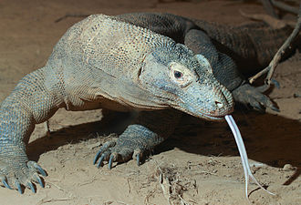

The Komodo dragon (Varanus komodoensis), also known as the Komodo monitor, is a species of lizard found in the Indonesian islands of Komodo, Rinca, Flores, and Gili Motang. A member of the monitor lizard family Varanidae, it is the largest living species of lizard, growing to a maximum length of 3 metres (10 ft) in rare cases and weighing up to approximately 70 kilograms (150 lb).
Its unusually large size has been attributed to island gigantism, since no other carnivorous animals fill the niche on the islands where it lives. However, recent research suggests the large size of Komodo dragons may be better understood as representative of a relict population of very large varanid lizards that once lived across Indonesia and Australia, most of which, along with other megafauna, died out after the Pleistocene (as a result of human activity). Fossils very similar to V. komodoensis have been found in Australia dating to more than 3.8 million years ago, and its body size remained stable on Flores, one of the small number of Indonesian islands where it is currently found, over the last 900,000 years, "a time marked by major faunal turnovers, extinction of the island's megafauna, and the arrival of early hominids by 880 ka [kiloannums]."
As a result of their size, these lizards dominate the ecosystems in which they live. Komodo dragons hunt and ambush prey including invertebrates, birds, and mammals. It has been claimed that they have a venomous bite; there are two glands in the lower jaw which secrete several toxic proteins. The biological significance of these proteins is disputed, but the glands have been shown to secrete an anticoagulant. Komodo dragons' group behaviour in hunting is exceptional in the reptile world. The diet of big Komodo dragons mainly consists of Timor deer, though they also eat considerable amounts of carrion. Komodo dragons also occasionally attack humans.
Mating begins between May and August, and the eggs are laid in September. About 20 eggs are deposited in an abandoned megapode nest or in a self-dug nesting hole. The eggs are incubated for seven to eight months, hatching in April, when insects are most plentiful. Young Komodo dragons are vulnerable and therefore dwell in trees, safe from predators and cannibalistic adults. They take 8 to 9 years to mature, and are estimated to live up to 30 years.
Komodo dragons were first recorded by Western scientists in 1910. Their large size and fearsome reputation make them popular zoo exhibits. In the wild, their range has contracted due to human activities, and they are listed as vulnerable by the IUCN. They are protected under Indonesian law, and a national park, Komodo National Park, was founded to aid protection efforts.
